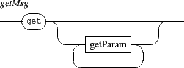
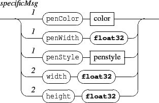
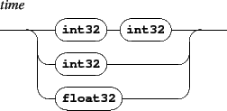
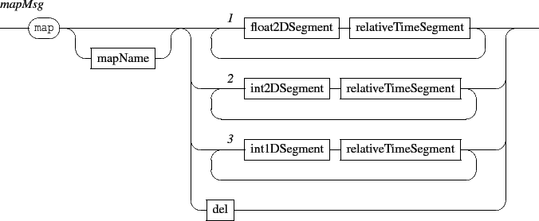

Next: 7. The 'get' messages
Up: INScore OSC Messages Reference
Previous: 5. Time management messages
Contents
Index
6. The 'set' message
The set messages can be sent to any address with the form /ITL/scene/identifier. The global form of the message is:

It sets a scene component data. When there is no destination for the OSC address, the component is first created before being given the message. When the target destination type doesn't correspond to the message type, the object is replaced by an adequate object.
Supported types are the following:
- txt: a textual component.
- html: an html component defined by an HTML string.
- gmn: a Guido score defined by a GMN string.
- svg: SVG graphics defined by a SVG string.
- graph: graphic of a signal. See section 13 p.
![[*]](crossref.gif) for details about the graph objects data.
for details about the graph objects data.
- rect: a rectangle specified by a width and height. Width and height are expressed in scene coordinates space, thus a width or a height of 2 corresponds to the width or a height of the scene.
- ellipse: an ellipse specified by a width and height.
- polygon: a polygon specified by a sequence of points, each point being defined by its (x,y) coordinates. Those coordinates are expressed in the scene coordinate space, but only taking in acount the relative position of the points ( i.e a polygon A = { (0,0) ; (1,1) ; (0,1) } is equivalent to a polygon B = { (1,1) ; (2,2) ; (1,2) } ).
- curve: a sequence of 4-points bezier cubic curve. If the end-point of a curve doesn't match the start-point of the following one, the curves are linked by a straight line. The first curve follows the last curve. The inner space defined by the sequence of curves is filled, using the object color. The points coordinates are handled as in a polygon.
- line: a simple line specified by a point (x,y) expressed in scene coordinate space or by a width and angle. The point form is used to compute a line from (0,0) to (x,y), which is next drawn centered on the scene.
- txtf: a textual component defined by a file.
- htmlf: an html component defined by an HTML file.
- gmnf: a Guido score defined by a GMN file.
- svgf: vectorial graphics defined by a SVG file.
- img: an image file based component. The image format is infered from the file extension.
- video: a video file based component. The video format is infered from the file extension. Note that navigation through the video is made using its date.
- file: a generic type to handle file based objects. Actually, the file type is translated into a one of the txtf, gmnf, img or video types, according to the file extension (see table 6.1).
Format of the set message is:

Note that the default position of any component is [0,0]. Objects are drawn centered on their position.


See also: the application rootPath message (section 2) for file based objects.
Table 6.1:
File extensions supported by the file translation scheme.
| file extension |
translated type |
| .txt .text |
txtf |
| .htm .html |
htmlf |
| .gmn .xml |
gmnf |
| .svg |
svgf |
| .jpg .jpeg .png .gif .bmp .tiff |
img |
| .avi .wmv .mpg .mpeg .mp4 |
video |
Next: 7. The 'get' messages
Up: INScore OSC Messages Reference
Previous: 5. Time management messages
Contents
Index
Grame - Interlude project [ANR-08-CORD-010]